This page provides comprehensive examples of using unifres with various model types in R.
Example 1: logistic regression
Detecting missing polynomial terms
library(unifres)# Generate data with a quadratic relationshipset.seed(1217)n <-1000x <-rnorm(n)z <-1-2*x +3*x^2+rlogis(n)y <-ifelse(z >0, 1, 0)# Fit incorrect model (missing x^2)fit_wrong <-glm(y ~ x, family = binomial)# Fit correct modelfit_correct <-glm(y ~ x +I(x^2), family = binomial)# Compare with function-function plotspar(mfrow =c(1, 2))ffplot(fit_wrong, type ="l", main ="Missing x²")ffplot(fit_correct, type ="l", main ="Correct Model")
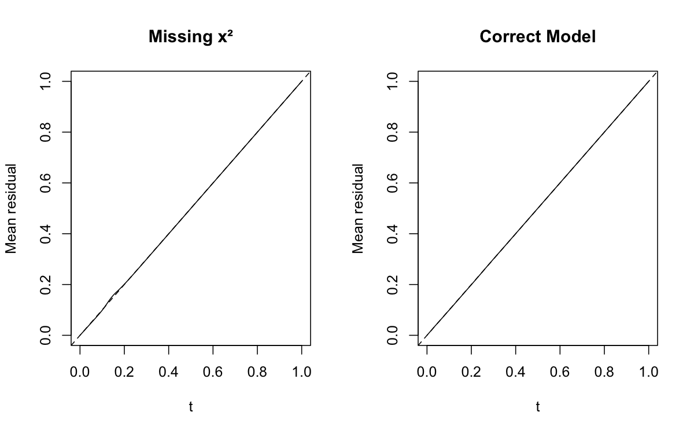
Using FRED plots
library(hexbin)# FRED plots show where the model failspar(mfrow =c(1, 2))fredplot(fit_wrong, x = x, type ="hex",main ="Wrong Model", aspect =1)
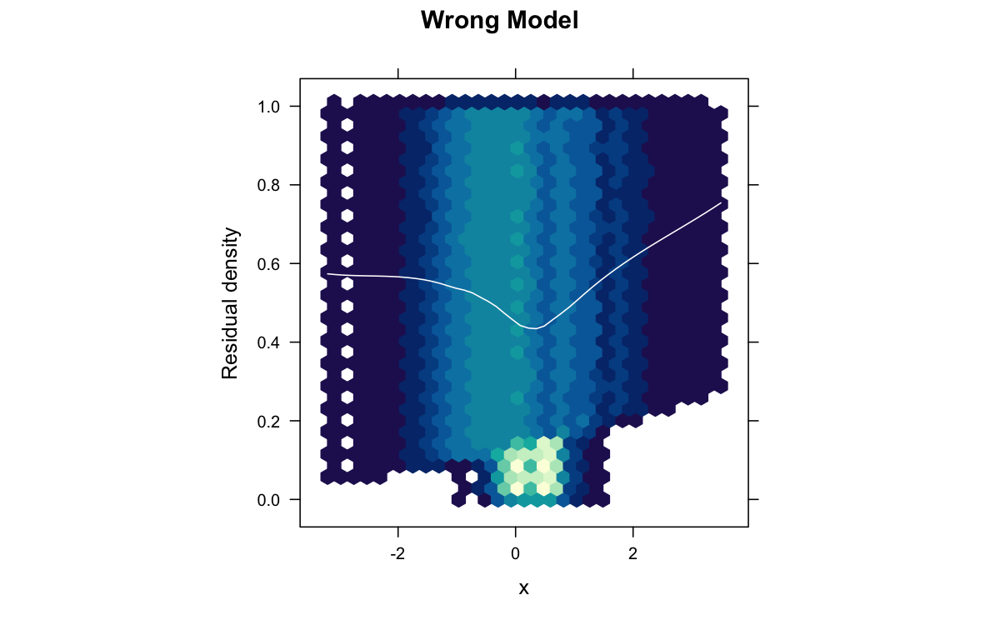
fredplot(fit_correct, x = x, type ="hex",main ="Correct Model", aspect =1)
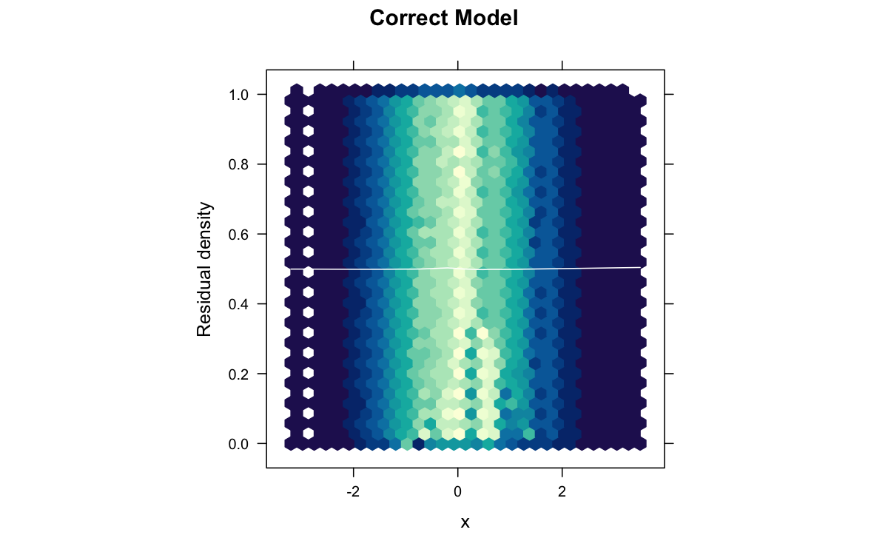
The wrong model shows a clear parabolic pattern in the FRED plot, indicating the missing quadratic term.
Example 2: Poisson regression
Count data analysis
# Simulate count dataset.seed(42)n <-500x1 <-rnorm(n)x2 <-rnorm(n)lambda <-exp(1+0.5*x1 +0.8*x2)y <-rpois(n, lambda = lambda)# Fit modelfit <-glm(y ~ x1 + x2, family = poisson)# Check model adequacypar(mfrow =c(2, 2))ffplot(fit, type ="l", main ="Function-Function Plot")fredplot(fit, x = x1, type ="hex", main ="FRED: x1")fredplot(fit, x = x2, type ="hex", main ="FRED: x2")# Surrogate residual plotsurr_res <-fresiduals(fit, type ="surrogate")plot(fitted(fit), surr_res,xlab ="Fitted Values", ylab ="Surrogate Residuals")abline(h =0.5, col ="red", lty =2)
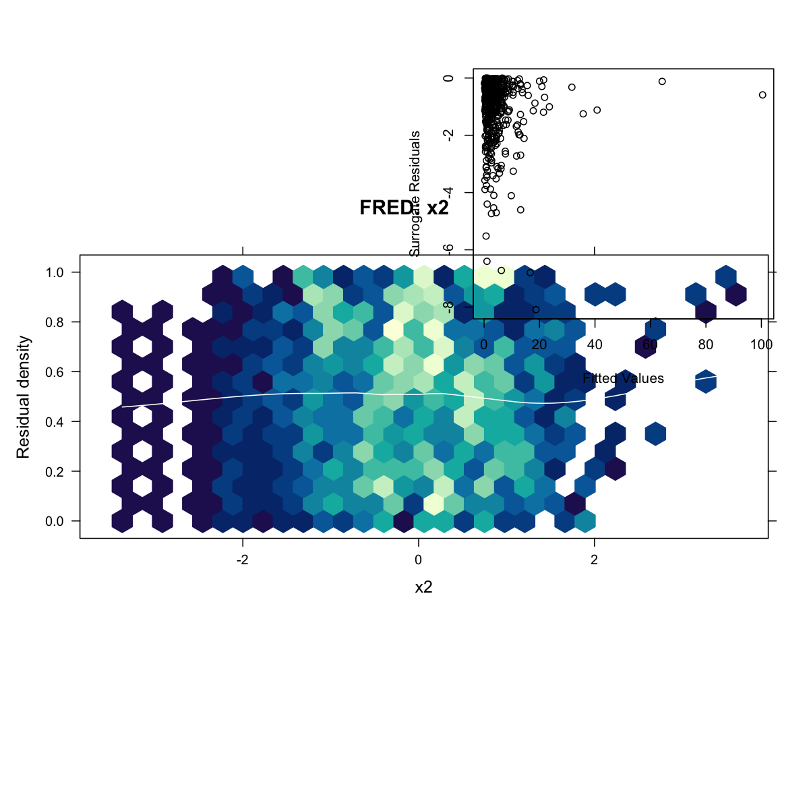
Detecting overdispersion
library(MASS) # For rnegbin and glm.nb functions# Generate overdispersed count dataset.seed(123)n <-500x <-rnorm(n)mu <-exp(1+ x)# Add overdispersion via negative binomialy <-rnegbin(n, mu = mu, theta =2)# Fit Poisson (wrong)fit_pois <-glm(y ~ x, family = poisson)# Fit Negative Binomial (correct)fit_nb <-glm.nb(y ~ x)# Comparepar(mfrow =c(1, 2))ffplot(fit_pois, main ="Poisson")ffplot(fit_nb, main ="Negative Binomial")
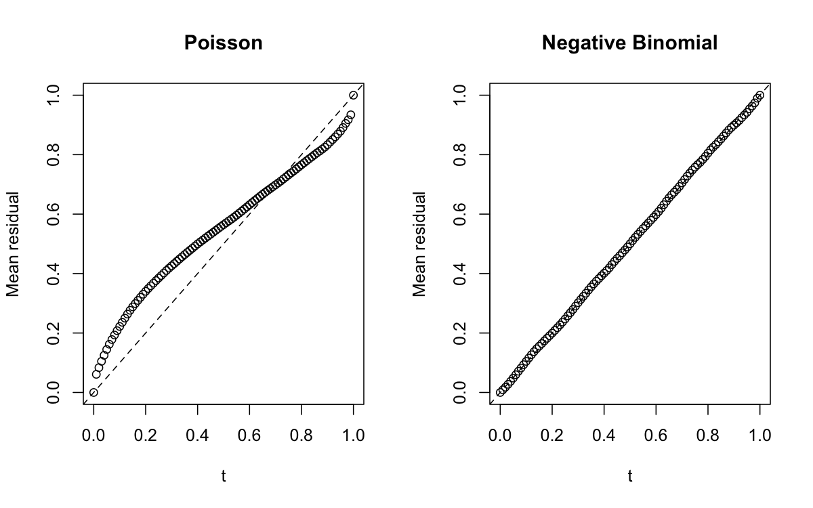
Example 3: negative binomial regression
library(MASS)# Generate negative binomial dataset.seed(2024)n <-400x <-rnorm(n)mu <-exp(1+0.5*x)y <-rnbinom(n, mu = mu, size =3)# Fit modelfit_nb <-glm.nb(y ~ x)# Diagnosticsfres <-fresiduals(fit_nb)par(mfrow =c(1, 3))ffplot(fit_nb, type ="l", main ="Fn-Fn Plot")fredplot(fit_nb, x = x, type ="hex", main ="FRED Plot")# Compare to traditional deviance residualsdev_res <-residuals(fit_nb, type ="deviance")surr_res <-fresiduals(fit_nb, type ="surrogate")plot(surr_res, dev_res,xlab ="Surrogate Residuals",ylab ="Deviance Residuals")
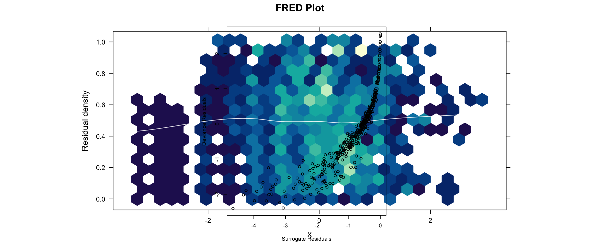
Example 4: generalized additive models (GAM)
library(mgcv)# Generate data with non-linear relationshipset.seed(777)n <-500x <-runif(n, -3, 3)f <-function(x) sin(x) +0.5*xeta <-f(x)mu <-exp(eta)y <-rpois(n, lambda = mu)# Fit GAM with smooth termfit_gam <-gam(y ~s(x), family = poisson)# Fit incorrect GLM (linear)fit_glm <-glm(y ~ x, family = poisson)# Compare diagnosticspar(mfrow =c(2, 2))ffplot(fit_glm, main ="GLM (Wrong)")ffplot(fit_gam, main ="GAM (Correct)")fredplot(fit_glm, x = x, type ="hex", main ="GLM FRED")fredplot(fit_gam, x = x, type ="hex", main ="GAM FRED")
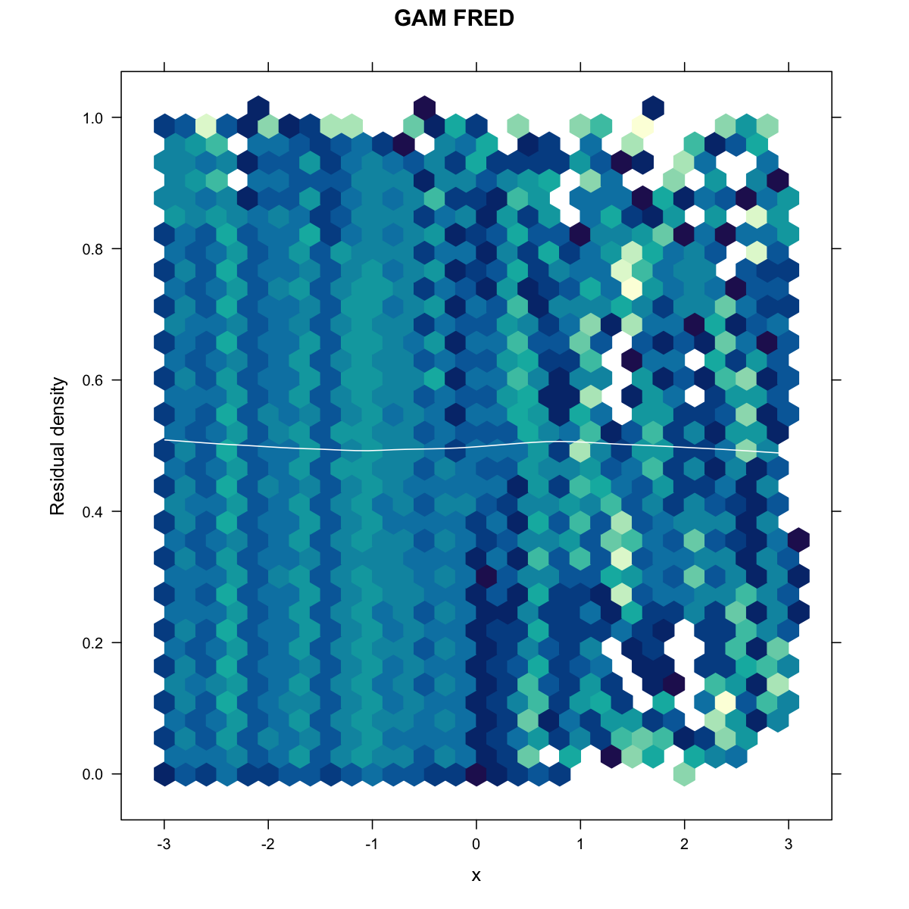
Example 5: ordinal regression
library(VGAM)# Generate ordinal outcome dataset.seed(999)n <-500x1 <-rnorm(n)x2 <-rnorm(n)# True latent variablez <-1+0.8*x1 -0.5*x2 +rlogis(n)# Create ordinal outcome with 4 categoriesy <-cut(z, breaks =c(-Inf, -1, 0, 1, Inf), labels =FALSE)# Fit proportional odds modelfit_ord <-vglm(factor(y) ~ x1 + x2,family =cumulative(parallel =TRUE))# Diagnosticspar(mfrow =c(1, 3))ffplot(fit_ord, type ="l", main ="Fn-Fn Plot")fredplot(fit_ord, x = x1, type ="hex", main ="FRED: x1")fredplot(fit_ord, x = x2, type ="hex", main ="FRED: x2")# Check proportional odds assumption# If violated, try parallel = FALSE
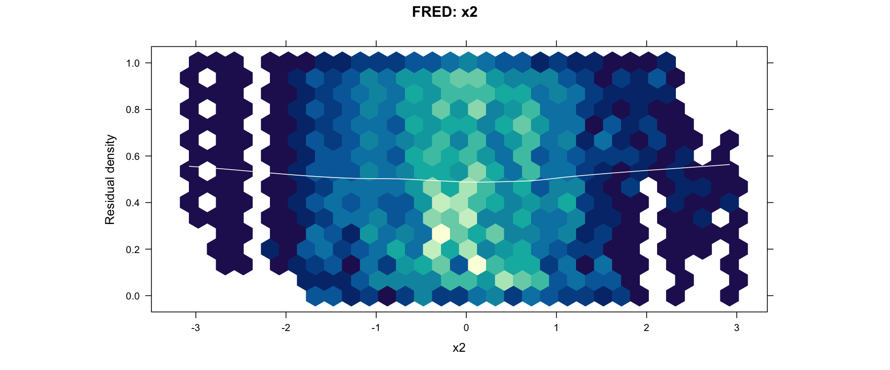
Example 6: zero-inflated models
library(pscl)library(VGAM)# Generate zero-inflated count dataset.seed(2025)n <-500x <-rnorm(n)# Zero-inflation probabilitypi <-plogis(-1+0.5*x)# Count processlambda <-exp(1+0.8*x)# Generate outcomey <-ifelse(rbinom(n, 1, pi) ==1, 0, rpois(n, lambda))# Fit zero-inflated Poisson modelfit_zip <-zeroinfl(y ~ x | x, dist ="poisson")# Diagnosticspar(mfrow =c(1, 2))ffplot(fit_zip, type ="l", main ="ZIP Model")fredplot(fit_zip, x = x, type ="hex", main ="FRED Plot")# Compare to standard Poissonfit_pois <-glm(y ~ x, family = poisson)ffplot(fit_pois, main ="Standard Poisson")
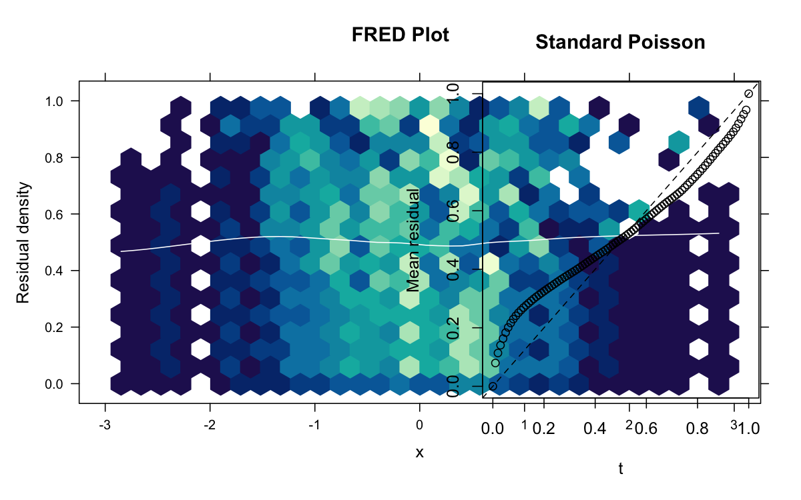
Example 7: model comparison
Comparing nested models
# Generate dataset.seed(333)n <-800x1 <-rnorm(n)x2 <-rnorm(n)x3 <-rnorm(n)# True model includes x1 and x2, but not x3eta <-1+ x1 +0.5*x2y <-rbinom(n, 1, plogis(eta))# Fit modelsfit1 <-glm(y ~ x1, family = binomial)fit2 <-glm(y ~ x1 + x2, family = binomial)fit3 <-glm(y ~ x1 + x2 + x3, family = binomial)# Visual comparisonpar(mfrow =c(2, 3))ffplot(fit1, main ="Model 1: x1 only")ffplot(fit2, main ="Model 2: x1 + x2")ffplot(fit3, main ="Model 3: x1 + x2 + x3")fredplot(fit1, x = x1, type ="hex", main ="M1 FRED")fredplot(fit2, x = x1, type ="hex", main ="M2 FRED")fredplot(fit3, x = x1, type ="hex", main ="M3 FRED")
# Customize fredplot with hex typelibrary(hexbin)fredplot(fit, x = x,type ="hex",xbins =30, # Number of hexagonal binscolorkey =TRUE, # Show legendcolor.palette = heat.colors, # Custom color schemesmooth =TRUE, # Add LOESS smoothsmooth.col ="cyan", # Cyan smooth linesmooth.lwd =3, # Thick smooth linexlab ="Predictor",ylab ="Functional Residual",main ="Custom FRED Plot")
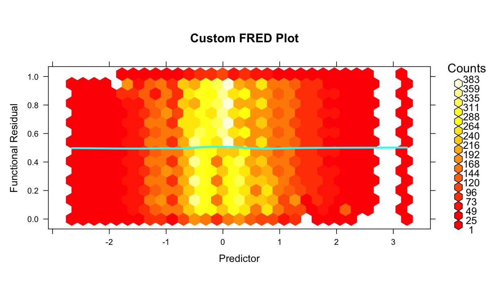
# Customize with KDE typelibrary(MASS)library(lattice)fredplot(fit, x = x,type ="kde",n =50, # Grid resolutioncolor.palette = topo.colors, # Custom colorssmooth =TRUE,xlab ="Predictor",main ="KDE FRED Plot")
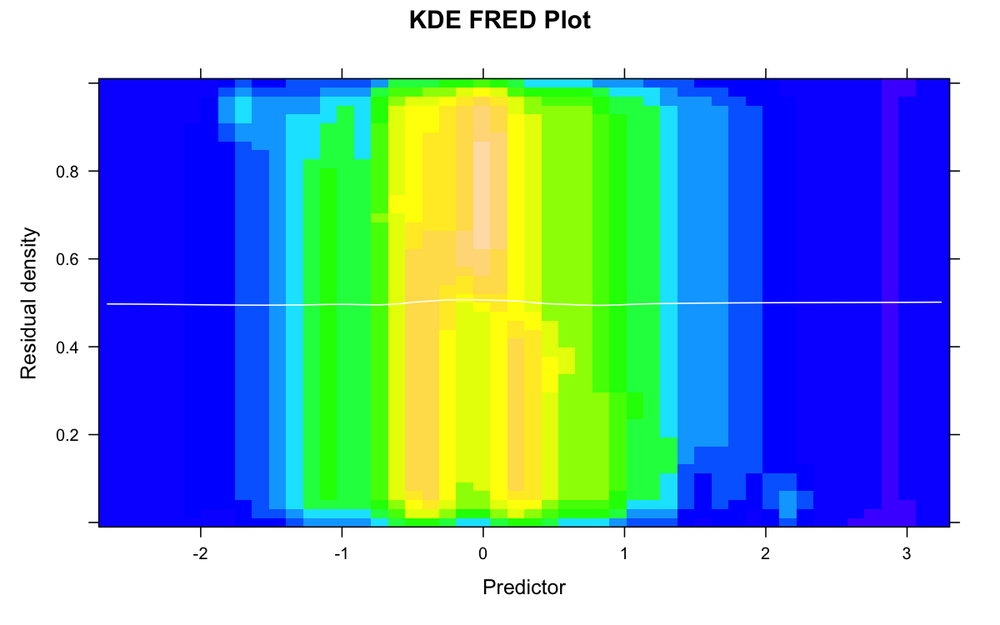
Example 9: large datasets
Subsampling for speed
# Large datasetset.seed(12345)n <-50000x <-rnorm(n)y <-rbinom(n, 1, plogis(x))fit <-glm(y ~ x, family = binomial)# Use subsampling for faster plottingffplot(fit, n =1000) # Use only 1000 observations
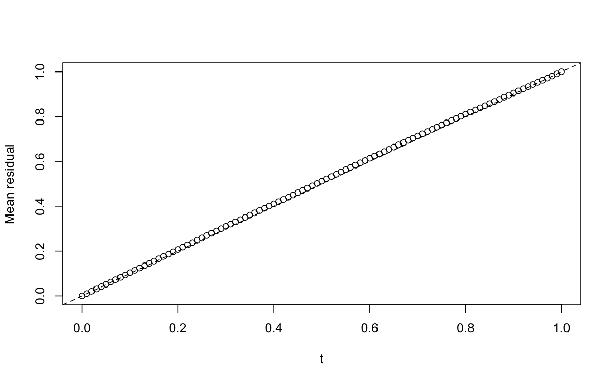
# For FRED plots, sample the dataidx <-sample(n, 5000)fredplot(fit, x = x[idx], type ="hex")
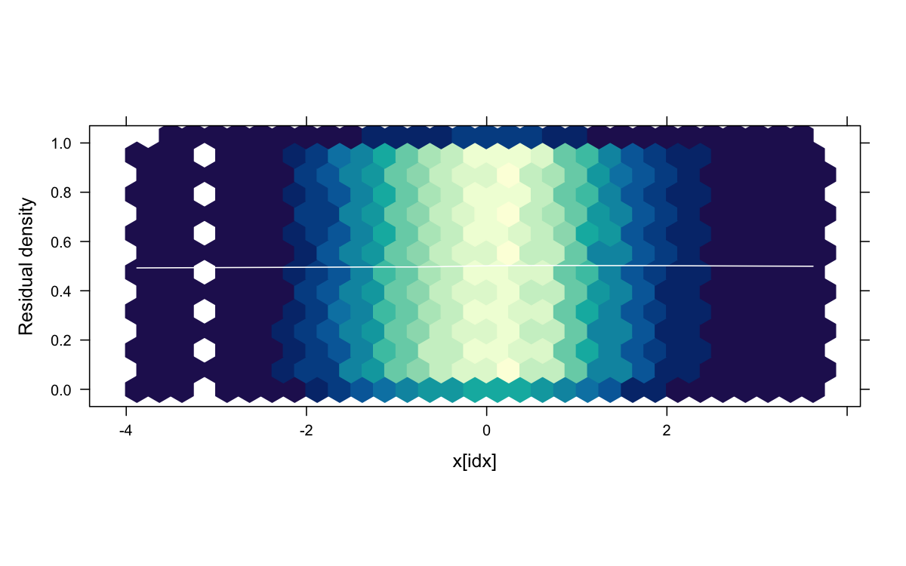
Example 10: extracting residuals for custom analysis
# Generate dataset.seed(42)n <-500x <-rnorm(n)y <-rpois(n, exp(0.5+0.3*x))# Fit modelfit <-glm(y ~ x, family = poisson)# Get functional residualsfres_list <-fresiduals(fit, type ="function")# Evaluate first functional residual at specific pointst_vals <-seq(0, 1, by =0.1)f1_vals <-sapply(t_vals, fres_list[[1]])# Get surrogate residuals for custom plotssurr_res <-fresiduals(fit, type ="surrogate")# Custom analysislibrary(ggplot2)df <-data.frame(x = x, residual = surr_res)ggplot(df, aes(x = x, y = residual)) +geom_point(alpha =0.3) +geom_smooth(method ="loess", color ="red") +geom_hline(yintercept =0.5, linetype ="dashed") +theme_minimal() +labs(title ="Custom Surrogate Residual Plot")
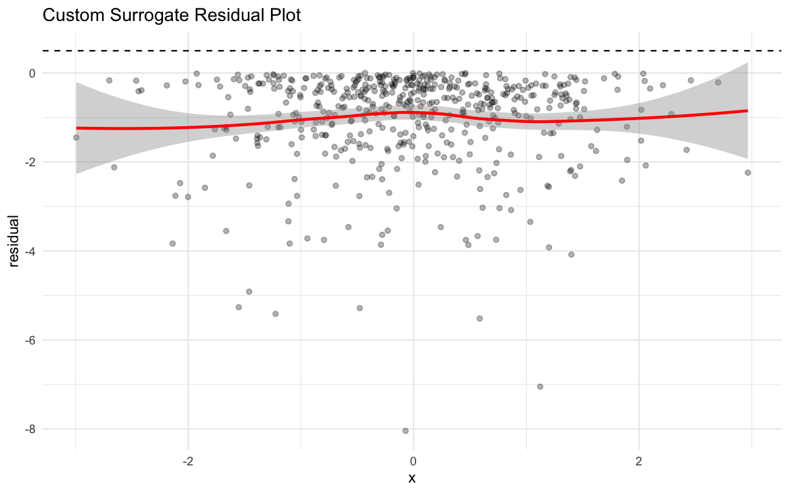
Tips and tricks
1. Choosing between hex and KDE
Hex plots: Better for large datasets, clearer for discrete patterns
KDE plots: Smoother appearance, better for continuous relationships
Start with hex for exploratory analysis
2. Interpreting FRED plots
Horizontal band: Good model fit
Curvature: Missing polynomial terms
Funneling: Heteroscedasticity
Gaps: Zero-inflation or missing categories
3. When to use each residual type
function: Full diagnostic capabilities, use for formal tests
surrogate: Quick checks, traditional residual plots
probscale: When you want residuals centered at 0
4. Combining with other diagnostics
# Comprehensive diagnostic panelpar(mfrow =c(2, 3))# Fit model on smaller datasetset.seed(42)n <-500x <-rnorm(n)y <-rpois(n, exp(0.5+0.3*x))fit <-glm(y ~ x, family = poisson)# Functional residual diagnosticsffplot(fit, main ="Fn-Fn Plot")fredplot(fit, x = x, type ="hex", main ="FRED Plot")# Traditional diagnosticsplot(fit, which =1) # Residuals vs Fittedplot(fit, which =2) # Q-Q Plotplot(fit, which =3) # Scale-Locationplot(fit, which =5) # Residuals vs Leverage